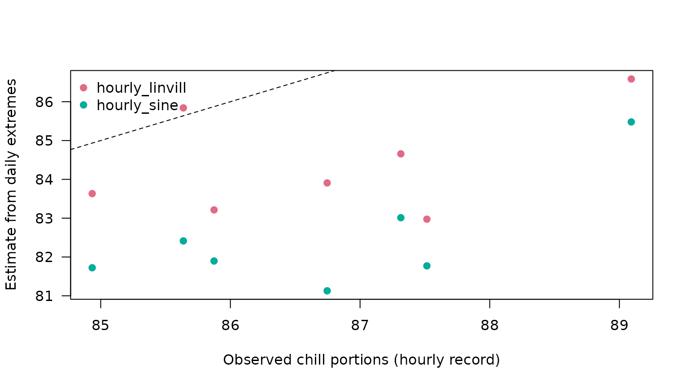

How to validate thermify with your own stations
Source:vignettes/articles/validate-your-data.Rmd
validate-your-data.Rmdthermify estimates degree-days and winter chill from daily or monthly temperatures. How good are those estimates where you work? The only way to know is to compare them with indices computed from observed hourly temperature. This guide shows how to do that with your own stations, step by step, and how to share the results so that they help other users.
So far the methods have been validated only in semi-arid north-central Chile (CEAZA-Met validation). Validations in other climates are very welcome: see the call for validations on GitHub.
What the validation measures
For each station and season, validate_station() computes
the observed index from the hourly record and compares
it with the estimates that thermify produces from
progressively less information:
| Level | Input to thermify | Error it adds |
|---|---|---|
daily |
daily minimum and maximum of the same station | the diurnal model (how hours are reconstructed from two daily values) |
monthly |
the station’s own monthly climatology | loss of day-to-day and year-to-year variability |
gridded (optional) |
a gridded climatology, e.g. the WorldClim cell | spatial interpolation and the difference between normal periods |
Comparing the levels tells you where the error comes from, not only how large it is.
What you need
- Hourly air temperature (degrees C) from one or more stations. Ideally at least 5 complete seasons, because one season says little about systematic errors.
- For each station: name, latitude, longitude, elevation, the data source and how it must be cited.
- The time zone of the timestamps, and whether each value marks the start or the end of its hour.
Step 1: read your data
Most networks deliver a CSV with a date-time column and a temperature
column. The two most common pitfalls are the time zone
and daylight saving time: thermify expects local
standard time, without clock changes. Use a fixed-offset zone
("Etc/GMT+4" is UTC-4, that is, Chilean standard time; note
the inverted sign in these names) or convert from UTC.
obs <- read.csv("my_station.csv")
obs$time <- as.POSIXct(obs$datetime, format = "%Y-%m-%d %H:%M",
tz = "Etc/GMT+4")
# If each value marks the END of its hour, shift it to the start:
# obs$time <- obs$time - 3600
summary(obs$temperature) # check units and implausible valuesTo make this guide reproducible without distributing third-party data, the rest of the examples use a synthetic station built with known diurnal cycles and random noise. Its numbers only illustrate the workflow; they are not a validation result.
set.seed(42)
dates <- seq(as.Date("2016-01-01"), as.Date("2022-12-31"), by = "day")
doy <- as.integer(format(dates, "%j"))
tmin <- 7 + 5 * cos(2 * pi * (doy - 20) / 365) + rnorm(length(dates), 0, 2)
tmax <- tmin + 12 + 3 * cos(2 * pi * (doy - 20) / 365) +
rnorm(length(dates), 0, 1.5)
hourly <- hourly_temperatures(tmin, tmax, "linvill", latitude = -33,
doy = doy) +
rnorm(24 * length(dates), 0, 0.7) # measurement noise
obs <- data.frame(
time = as.POSIXct(paste(rep(format(dates), each = 24),
sprintf("%02d:00", rep(0:23, length(dates)))),
tz = "Etc/GMT+4"),
temperature = as.vector(t(hourly)))
obs$temperature[sample(nrow(obs), 300)] <- NA # isolated gaps
obs$temperature[20000:20030] <- NA # a long gap
head(obs)
#> time temperature
#> 1 2016-01-01 00:00:00 15.21702
#> 2 2016-01-01 01:00:00 15.97984
#> 3 2016-01-01 02:00:00 16.15406
#> 4 2016-01-01 03:00:00 15.16599
#> 5 2016-01-01 04:00:00 15.22171
#> 6 2016-01-01 05:00:00 15.92227Step 2: quality control
prepare_station_hourly() puts the record on a regular
hourly grid, fills short gaps by linear interpolation and flags the days
that remain incomplete. Only complete days, and therefore complete
seasons, are used later.
st <- prepare_station_hourly(obs$time, obs$temperature, max_gap = 2,
range = c(-40, 55))
st
#> <station_hourly> 2016-01-01 to 2022-12-31
#> days: 2557 (2555 valid, 99.9%)
#> hours: 61037 observed, 300 filled (gaps <= 2 h), 31 missing-
max_gap = 2fills gaps of up to two hours. Longer gaps leave the day invalid: do not increase it much, because interpolating long gaps smooths exactly the cold or hot spells the indices depend on. -
rangeremoves physically implausible values before filling. - Report the counts of filled and missing hours with your results.
Step 3: define the seasons
The defaults follow the southern hemisphere: chill
season 1 May to 31 August and heat season 1 September to 30 April. In
the northern hemisphere, or for crops with other
phenology, set them explicitly, for example
chill_period = c("11-01", "02-28") and
heat_period = c("04-01", "10-31"). Windows that cross the
new year are supported; each season is labelled by the year in which it
starts.
Step 4: run the validation
v <- validate_station(st, latitude = -33,
indices = c("gdd", "ch", "cu", "cp"), base = 10,
chill_period = c("05-01", "08-31"),
heat_period = c("09-01", "04-30"))
v
#> <thermify_validation> 7 season(s) evaluated, 3 excluded
#> index level method n bias mae rmse rel_bias r
#> gdd daily average 5 -45.15 45.15 45.24 -3.15 0.99
#> gdd daily single_sine 5 58.28 58.28 58.50 4.07 0.97
#> gdd daily single_triangle 5 22.47 22.47 23.05 1.57 0.97
#> gdd daily double_sine 5 56.05 56.05 56.30 3.91 0.97
#> gdd daily double_triangle 5 19.55 19.55 20.32 1.37 0.97
#> gdd daily hourly_linvill 5 23.36 23.36 24.15 1.63 0.96
#> gdd daily hourly_sine 5 55.47 55.47 55.74 3.87 0.97
#> ch daily sine 7 -200.59 200.59 201.92 -13.44 0.99
#> ch daily hourly_linvill 7 40.71 40.71 44.19 2.73 0.97
#> ch daily hourly_sine 7 -194.43 194.43 195.76 -13.02 0.98
#> cu daily hourly_linvill 7 -77.21 77.21 77.62 -3.91 0.98
#> cu daily hourly_sine 7 -240.07 240.07 240.53 -12.17 0.92
#> cp daily hourly_linvill 7 -2.33 2.39 2.69 -2.68 0.44
#> cp daily hourly_sine 7 -4.24 4.24 4.35 -4.89 0.72
#> gdd monthly average 5 -73.95 73.95 76.97 -5.16 NA
#> gdd monthly single_sine 5 27.44 27.46 34.77 1.92 NA
#> gdd monthly single_triangle 5 -7.52 19.22 22.65 -0.53 NA
#> gdd monthly double_sine 5 27.58 27.58 34.89 1.93 NA
#> gdd monthly double_triangle 5 -7.33 19.10 22.58 -0.51 NA
#> gdd monthly hourly_linvill 5 -3.80 17.75 21.70 -0.27 NA
#> ch monthly sine 7 -156.67 156.67 167.80 -10.49 NA
#> ch monthly hourly_linvill 7 98.14 98.14 115.08 6.57 NA
#> cu monthly hourly_linvill 7 121.50 121.50 126.78 6.16 NA
#> cp monthly hourly_linvill 7 0.99 1.38 1.63 1.15 NA
#> gdd monthly hourly_sine 5 27.62 27.62 34.91 1.93 NA
#> ch monthly hourly_sine 7 -159.86 159.86 170.78 -10.71 NA
#> cu monthly hourly_sine 7 -45.50 50.21 58.15 -2.31 NA
#> cp monthly hourly_sine 7 -1.03 1.27 1.65 -1.19 NATo include the gridded level, pass the 12 monthly mean minimum and maximum temperatures of the grid cell that contains the station. For WorldClim 2.1:
pt <- terra::vect(data.frame(lon = -71.0, lat = -33.0),
geom = c("lon", "lat"), crs = "EPSG:4326")
region <- terra::ext(terra::buffer(pt, 2000))
cell <- function(r) as.vector(as.matrix(terra::extract(r, pt, ID = FALSE)))
wc <- list(tmin = cell(worldclim_region("tmin", region, tempdir(),
mask = FALSE)),
tmax = cell(worldclim_region("tmax", region, tempdir(),
mask = FALSE)))
v <- validate_station(st, latitude = -33, gridded = wc)The synthetic record covers 2016-2022: all 7 chill seasons are
evaluated, but only 5 heat seasons (n in the table). The
heat seasons cut by the start or the end of the record (2015 and 2022)
and the one that contains the 31-hour gap (2017, which leaves two days
invalid) are excluded and listed in v$excluded:
v$excluded
#> index season reason
#> 1 gdd 2015 incomplete window
#> 2 gdd 2017 2 invalid day(s)
#> 3 gdd 2022 incomplete windowStep 5: read the results
The object has four parts:
-
v$metrics: one row per index, level and method, withn(seasons),bias(estimate minus observed),mae,rmse,rel_bias(bias as a percentage of the observed mean) andr(correlation across seasons); -
v$seasons: the estimate and the observed value for every season; -
v$excluded: the seasons that were not evaluated, and why; -
v$quality: the gap-filling counts.
m <- v$metrics
d <- m[m$level == "daily", c("index", "method", "n", "bias", "rel_bias", "mae")]
d[4:6] <- lapply(d[4:6], round, 1)
d
#> index method n bias rel_bias mae
#> 1 gdd average 5 -45.1 -3.2 45.1
#> 2 gdd single_sine 5 58.3 4.1 58.3
#> 3 gdd single_triangle 5 22.5 1.6 22.5
#> 4 gdd double_sine 5 56.0 3.9 56.0
#> 5 gdd double_triangle 5 19.6 1.4 19.6
#> 6 gdd hourly_linvill 5 23.4 1.6 23.4
#> 7 gdd hourly_sine 5 55.5 3.9 55.5
#> 8 ch sine 7 -200.6 -13.4 200.6
#> 9 ch hourly_linvill 7 40.7 2.7 40.7
#> 10 ch hourly_sine 7 -194.4 -13.0 194.4
#> 11 cu hourly_linvill 7 -77.2 -3.9 77.2
#> 12 cu hourly_sine 7 -240.1 -12.2 240.1
#> 13 cp hourly_linvill 7 -2.3 -2.7 2.4
#> 14 cp hourly_sine 7 -4.2 -4.9 4.2A plot of estimates against observations, season by season, often says more than the table:
s <- v$seasons[v$seasons$level == "daily" & v$seasons$index == "cp", ]
methods <- unique(s$method)
cols <- grDevices::hcl.colors(length(methods), "Dark 3")
plot(s$observed, s$estimate, pch = 19, col = cols[match(s$method, methods)],
xlab = "Observed chill portions (hourly record)",
ylab = "Estimate from daily extremes", las = 1)
abline(0, 1, lty = 2)
legend("topleft", legend = methods, col = cols, pch = 19, bty = "n")
How to interpret them
- Relative bias is the most comparable number across sites. A few percent is small next to the year-to-year variability of the indices.
-
Utah units can be close to zero or negative, so
their relative bias is not reported (
NA); use the absolute bias and MAE instead. - At the
monthlyandgriddedlevels a single climatological estimate is compared with every season: the error includes the year-to-year variability, and correlation is not defined. - Daily minima taken from hourly records can fall in the evening when the following night is colder; that is part of the error being measured, not a problem in the data.
Several stations
Run the same steps for each station and stack the results. The
CEAZA-Met scripts in data-raw/validation-ceaza/
are a complete, adaptable example: screening, download with a local
cache, validation and figures.
stations <- read.csv("stations.csv") # code, name, lat, lon, elevation
results <- lapply(seq_len(nrow(stations)), function(i) {
obs <- read_my_station(stations$code[i]) # your own reader
st <- prepare_station_hourly(obs$time, obs$temperature)
v <- validate_station(st, latitude = stations$lat[i])
cbind(station = stations$code[i], v$seasons)
})
seasons <- do.call(rbind, results)
# Metrics pooled over all stations, by index, level and method
pooled <- do.call(rbind, lapply(
split(seasons, seasons[c("index", "level", "method")], drop = TRUE),
function(d) cbind(d[1, c("index", "level", "method")],
validation_metrics(d$estimate, d$observed))))With several stations you can also estimate weights for an ensemble
of degree-day methods (experimental) with
gdd_ensemble_weights(), which assesses them by leaving one
station out at a time.
Share your results
Validations in other climates are the most useful contribution to thermify. To share yours, open an issue or comment on the call for validations with:
- the stations (name, coordinates, elevation, period, data source and its citation);
-
v$metricsand, if possible,v$seasonsfor each station (only derived results: the hourly records stay with you or the data provider); - the numbers of filled and missing hours
(
v$quality); - the versions used:
packageVersion("thermify")andsessionInfo().
Every contribution is acknowledged by name in the validation article
and in NEWS.md, with the citation the data provider
requires.